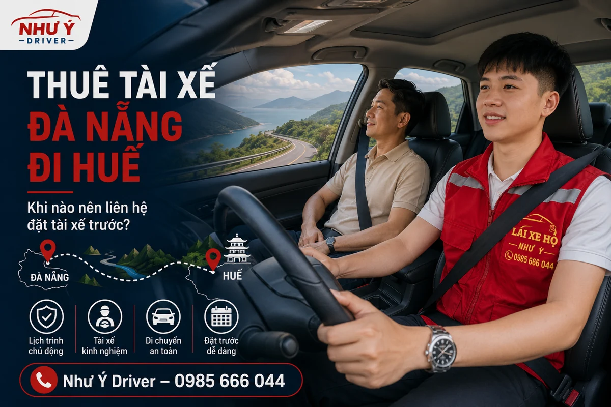

NHƯ Ý DRIVER · HƯỚNG DẪN LỊCH TRÌNH
Thuê tài xế từ Đà Nẵng đi Huế: những việc nên thống nhất trước
Thuê tài xế đi Huế bằng xe riêng cần rõ giờ hẹn ở điểm đến, loại xe, các chặng ghé và phương án về. Gửi kế hoạch cho Như Ý Driver để kiểm tra lịch phục vụ và báo chi phí; thời gian chạy được trao đổi theo hành trình thực tế.

Lập kế hoạch từ giờ cần đến, không chỉ giờ xuất phát
Nếu đi công việc hoặc có lịch hẹn, hãy nêu giờ cần có mặt ở địa chỉ đích. Người lái và điều phối cần xem cả thời gian chuẩn bị, điểm dừng và điều kiện thực tế khi trao đổi giờ đi. Không nên chốt chỉ từ một ước lượng chung cho cả tuyến.
Bài này không đưa số giờ di chuyển cố định. Hãy gửi địa chỉ cụ thể ở cả hai đầu và hỏi lại giờ khởi hành phù hợp với lịch đã nêu.
Thông tin chiếc xe cần gửi
- Dòng xe, kiểu hộp số và số người đi cùng.
- Xe của bạn, xe mượn hay xe thuê; điều kiện người lái nếu có.
- Nhiên liệu hoặc pin, tình trạng phương tiện và lưu ý vận hành.
- Nhu cầu mang đồ, điểm đón thêm người hoặc đổi người nhận xe.
Chuẩn bị tình trạng xe trước chuyến; không đợi đến lúc khởi hành mới báo các trục trặc đã biết. Danh sách bàn giao xe giúp kiểm tra những việc cơ bản.
Điểm dừng, thời gian chờ và lượt về
Nếu cần ghé làm việc, thăm người thân hoặc đón thêm người, liệt kê thứ tự điểm dừng. Hỏi rõ tài xế có chờ cùng lịch hay kết thúc ở điểm trả. Với hành trình khứ hồi, nêu giờ đón về và địa chỉ lượt về.
Nếu dự định lưu lại qua đêm, thông báo ngay khi hỏi lịch. Không mặc định một chuyến đi đã bao gồm thời gian chờ, ăn nghỉ hoặc toàn bộ lượt quay về.
Những nội dung cần có trong báo giá
| Thông tin | Bạn nên gửi hoặc hỏi |
|---|---|
| Hành trình | Điểm đầu, điểm cuối, các chặng ghé và chiều về. |
| Thời lượng | Giờ bắt đầu, kết thúc, thời gian chờ và nghỉ dự kiến. |
| Chi phí | Giá lái xe, cầu đường, đỗ xe, ăn nghỉ nếu có. |
| Thay đổi | Cách cập nhật khi đổi ngày, kéo dài lịch hoặc thêm điểm. |
Chi phí được trao đổi riêng theo kế hoạch thực tế. Với thông tin chưa đủ, hãy gửi bổ sung rồi nhận xác nhận lại thay vì tự suy từ giá của một chuyến nội thành.
Liên hệ và kiểm tra lịch trước khi đi
Gọi 0985 666 044 hoặc nhắn Zalo Như Ý Driver với lịch trình, loại xe và ngày sử dụng. Khả năng nhận chuyến được xác nhận theo lịch tài xế; nội dung hướng dẫn này không phải cam kết luôn nhận tuyến.
Trước ngày đi, rà lại địa chỉ nhận xe, người giữ chìa khóa, tổng phí và giờ hẹn. Nếu lịch thay đổi, báo lại qua đầu mối đã xác nhận.
Khi chuyến có cuộc hẹn cố định, ưu tiên thông tin nào?
- Giờ cần có mặt và địa chỉ cụ thể, kể cả cổng nhận nếu có.
- Các điểm phải ghé trước cuộc hẹn, người cần đón thêm.
- Khoảng chờ, giờ kết thúc dự kiến và phương án quay về.
- Điểm có thể linh hoạt nếu lịch thực tế thay đổi.
Trao đổi với điều phối về kế hoạch khởi hành sau khi đã có những thông tin trên. Không dùng một con số giờ chạy chung để bỏ qua chặng ghé, nghỉ hoặc điều kiện thực tế. Nếu lịch kéo dài qua đêm, hỏi rõ cả thời lượng phục vụ và các khoản liên quan.
Câu hỏi thường gặp
Muốn nhận giá cho chuyến Đà Nẵng – Huế cần gửi gì?
Gửi địa chỉ hai đầu, ngày giờ, loại xe, các chặng ghé, khoảng chờ và phương án về. Điều phối sẽ kiểm tra lịch và trao đổi giá cho kế hoạch đó.
Có thể yêu cầu thêm điểm nghỉ không?
Hãy trao đổi nhu cầu từ trước và cập nhật với tài xế theo tình hình thực tế; không ép lịch chạy liên tục.
Đi qua đêm cần hỏi gì?
Hỏi thời gian phục vụ, lượt về, ăn nghỉ nếu có và những khoản đã bao gồm trong giá.
Thông tin liên quan
Trao đổi chuyến đi với Như Ý Driver
Gửi điểm đón, điểm đến, loại xe và giờ đi để kiểm tra lịch. Chuyến được xác nhận sau khi hai bên thống nhất khả năng phục vụ, thời gian và chi phí.